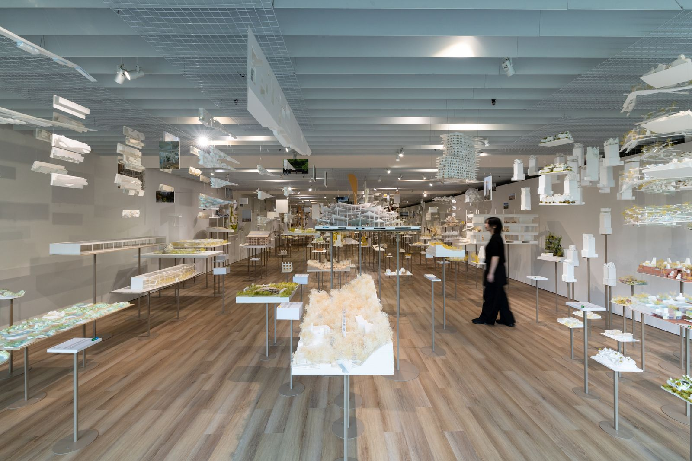
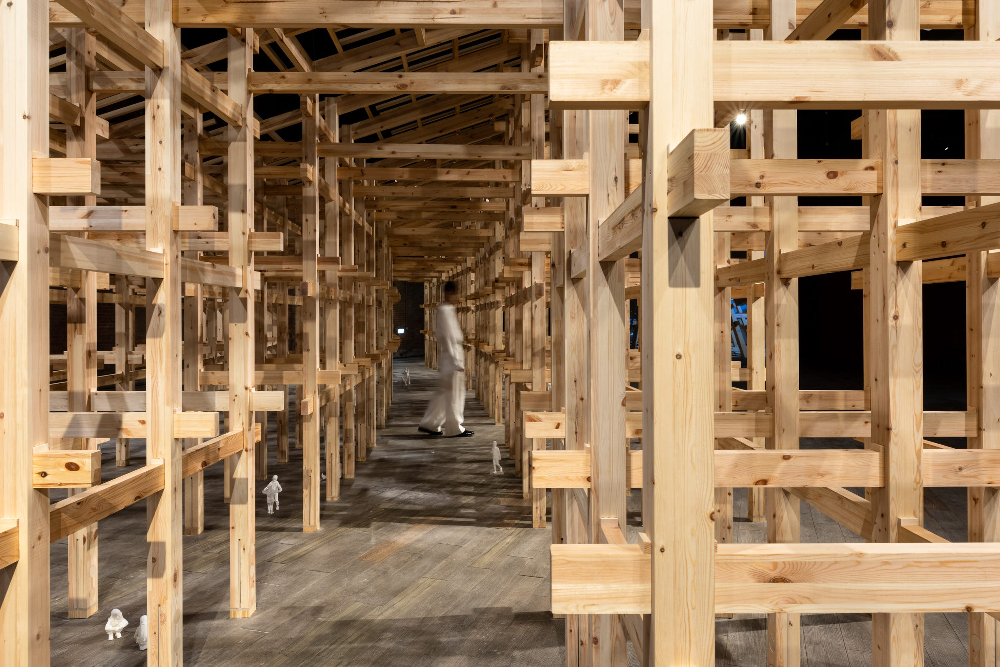
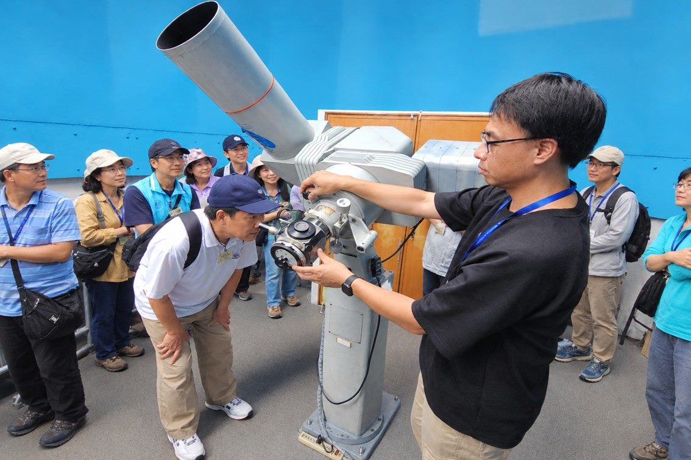
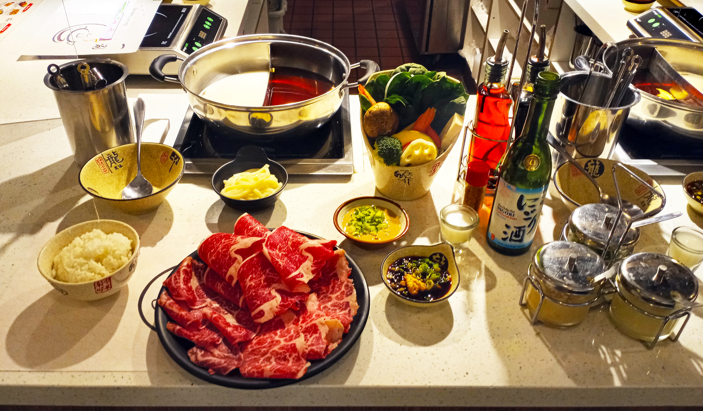
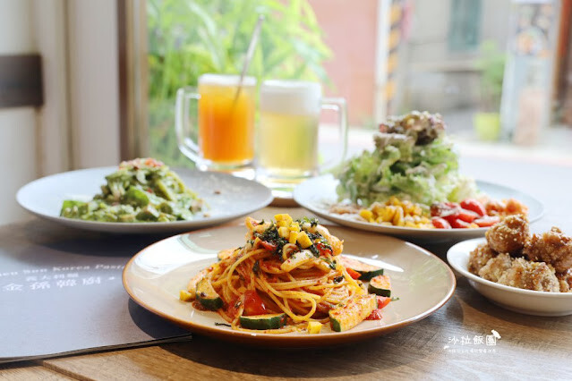
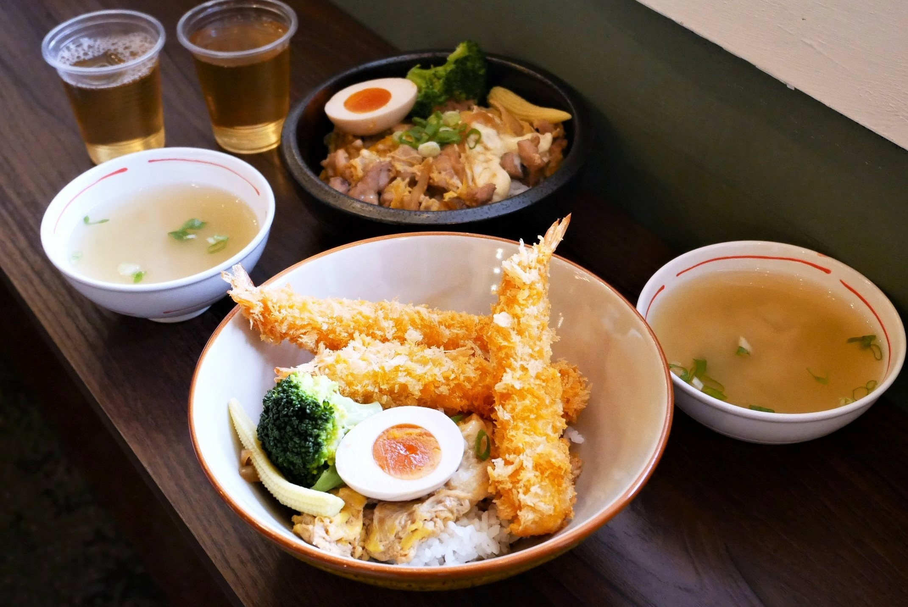

DAY 01 · 9/25 FRI
DAY 1
建築巨匠 × 滿月星空
# 原初未來森
# 忠泰美術館十週年
# 大阪萬博大屋根
# 天文館中秋夜
# 士林晚餐精選
13:30
—
16:30
—
16:30
十週年特展

SPOT 01
雙展區深度建築展
《藤本壯介建築展：原初．未來．森》 官方網站 ↗ The Architecture of Sou Fujimoto: Primordial Future Forest
日本自然系建築大師藤本壯介海外巡迴首站。由大師親自策劃空間，以「原初・未來・森」貫穿三十年創作哲思。展覽採「忠泰美術館 × 建國啤酒廠」雙展區規格，呈現百件模型手稿與世界級木構震撼：

【主展區】忠泰美術館 —— 思維之森・百件模型與手繪原稿
主展館
📍 臺北市大安區市民大道三段 178 號
近百件經典模型如林木般錯落懸吊，打造漫步靈感密林的沉浸體驗。匯聚倫敦蛇形藝廊、法國白樹大樓、武藏野美大圖書館及 House NA 等代表作，並首度公開珍貴手繪原稿。

【衛星展區】建國啤酒廠 —— 1:5 巨型「大阪萬博大屋根」實體木構
木構地標
📍 臺北市中山區松江路 25 巷 40 號（建國啤酒廠成品倉庫）
走入挑高紅磚百年啤酒倉庫，親睹 2025 大阪萬博象徵「環形大屋頂」1:5 巨型木構（高達 4.1 公尺）。穿梭傳統榫接樑柱之下，近距離感受世界最大木構造的磅礡尺度與光影之美。
觀展攻略與票務重要提醒
⚠️ 參觀必讀
一票暢遊雙展區：全票 $250 / 優待票 $200。建國啤酒廠現場不售票，請務必先於忠泰美術館櫃檯或線上通路購票。
推薦參觀動線：忠泰美術館主展區（約 1.5–2 小時） ➜ 沿市民大道步行 7 分鐘（550m） ➜ 進入建國啤酒廠成品倉庫體驗萬博大屋根（約 1 小時）。
開放與導覽時間：週二至週日 10:00–18:00（17:30 停止入場，週一休館）。週末 14:00 於主展區提供專人定時導覽。
17:00
—
20:00
—
20:00
中秋特別活動

SPOT 02
中秋特別開放・月光魔法夜
臺北市立天文科學教育館 官方網站 ↗ 🌕 中秋特別開放・「月光魔法夜」天文盛會（17:00 免費入場）
中秋限定旗艦企劃！17:00 起全館展示場免費開放，頂樓觀測室難得夜間開放入場。戶外廣場架設多座大口徑專業天文望遠鏡，搭配星空球幕電影與手機直焦觀月，共度知性浪漫的秋夜宇宙盛宴：

【亮點一】全館夜開免票 × 宇宙劇場與立體劇場免費加映
免費限定
📍 1F 大廳服務台劃位 ｜ 宇宙劇場 (IMAX Dome) ＆ 3D 立體劇場
17:00 起展示場自由參觀。指標性半球型球幕「宇宙劇場」與 3D 劇場特別加開免費場次，身歷其境飛越浩瀚星際、俯瞰月表細緻紋理。（※ 請先至 1F 大廳服務台領取免費劃位票，發完為止）

【亮點二】大口徑專業天文望遠鏡 ×「手機拍月亮」專區
觀月焦點
📍 天文館後門戶外廣場 ＆ 頂樓第二觀測室
現場架設多座 20–45 公分專業天文望遠鏡，由解說員引導細賞第谷環形山與雨海地貌。現場設有手機攝影支架與專人指導，隨手拍出清晰動人的中秋滿月特寫。
20:00
—
21:30
—
21:30
晚餐精選

SPOT 03
士林捷運站周邊 · 晚餐精選美饌
士林捷運站周邊 · 晚餐餐廳推薦 ★ Google 評分 4.7 — 4.9 超高口碑 ｜ 捷運士林站步行 1–4 分鐘
結束台北天文館的宇宙星空與滿月漫遊後，搭車約 5 分鐘抵達捷運士林站。商圈周邊精選三家人氣口碑名店，包含老母雞精燉火鍋、韓義獨創麵食與日式溫暖定食，在徐徐秋夜中悠閒大啖美饌：
🍲 自熬老母雞精燉
牛棒碗安GOBO精緻鍋物
士林站 步行4分
📍 台北市士林區大東路131號
距離士林站步行約 4 分鐘。主打自家老母雞純天然精燉高湯，座位寬敞舒適，無添加化學香精，是秋夜觀月後的暖心首選。
🕒 營業時間：
週二至週五 12:00–15:00 / 17:30–22:00、週末 11:30–22:00（週一公休）
✨ 店內特色：
無添加香精自熬雞湯、嚴選肉品與海鮮拼盤、內用霜淇淋與飲料無限供應。

🍝 韓義混血美饌
金孫韓廚 義大利麵
士林站 1號口旁
📍 台北市士林區中山北路五段505巷20號
隱身士林站 1 號出口旁靜巷，以純白簡約韓系咖啡廳風格，呈現韓義混血創意料理。招牌辣醬與辣炒魷魚麵香氣濃郁，氛圍優雅愜意。
🕒 營業時間：
週一至週五 12:00–15:00 / 17:30–21:30、週末 12:00–14:30 / 17:30–21:30
✨ 店內特色：
韓式辣醬義大利麵、辣炒魷魚義大利麵、韓式炸雞、海鮮煎餅。

🍱 4.9星極高口碑
士林貳貳參丼飯
士林站 1號口靜巷
📍 台北市士林區中正路223巷11號
士林站 1 號出口靜巷裡的溫暖木質日式食堂。現點現做炙燒鮭魚與牛五花丼飯，用料澎湃扎實，為 4.9 星超高口碑名店。
🕒 營業時間：
週一至週日 11:30–14:00 / 17:30–20:30
✨ 店內特色：
炙燒鮭魚丼、牛五花丼、炸豬排定食、附餐鮮甜味噌湯。
第一天 路線規劃
捷運忠孝新生站漫遊忠泰美術館與啤酒廠雙展區，傍晚前往士林天文館賞月，夜間品嚐士林站人氣美饌
忠泰美術館
建國啤酒廠（步行7分）
臺北市立天文科學教育館
士林捷運站周邊晚餐（精緻鍋物／韓義料理／日式丼飯）